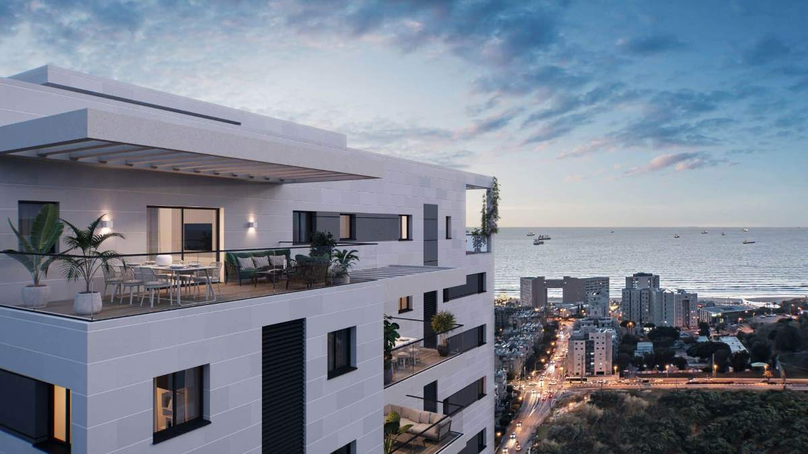
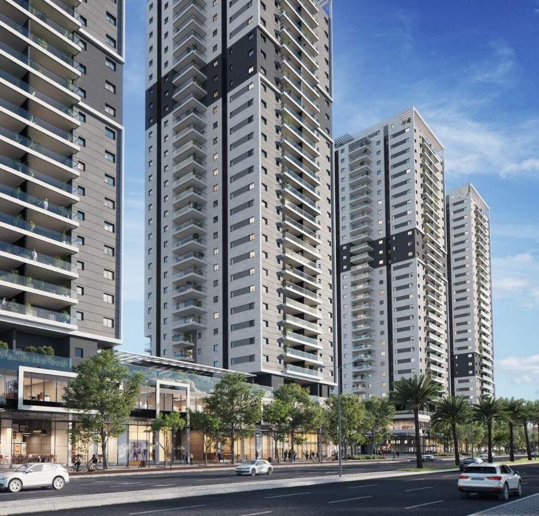
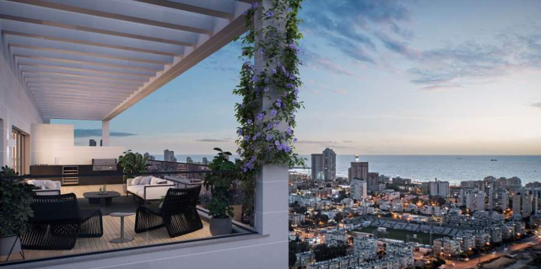
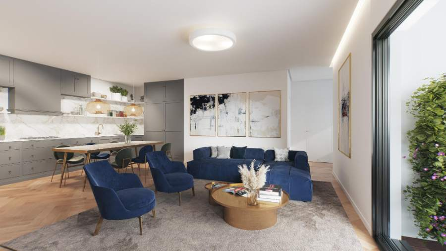
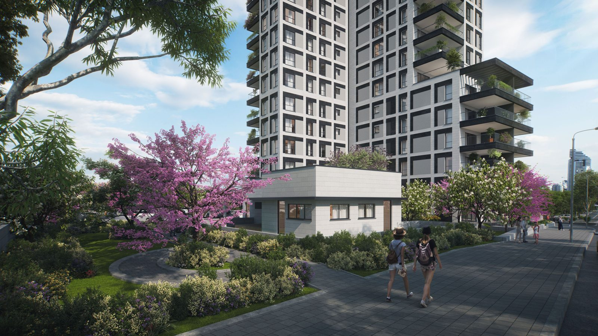
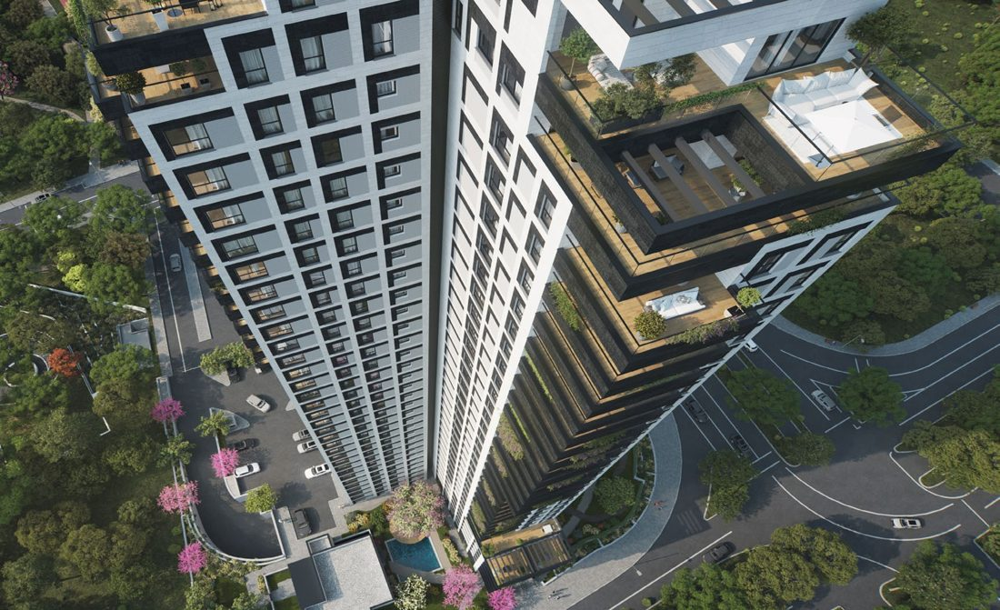
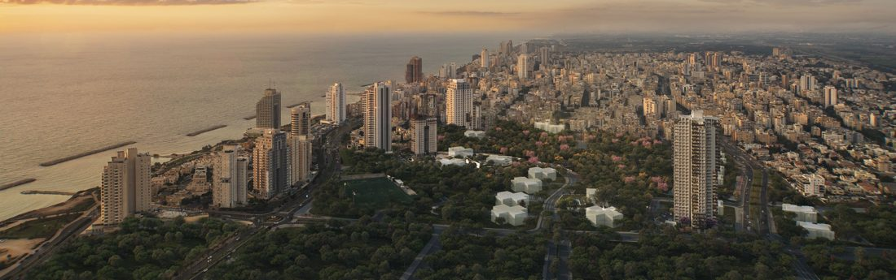
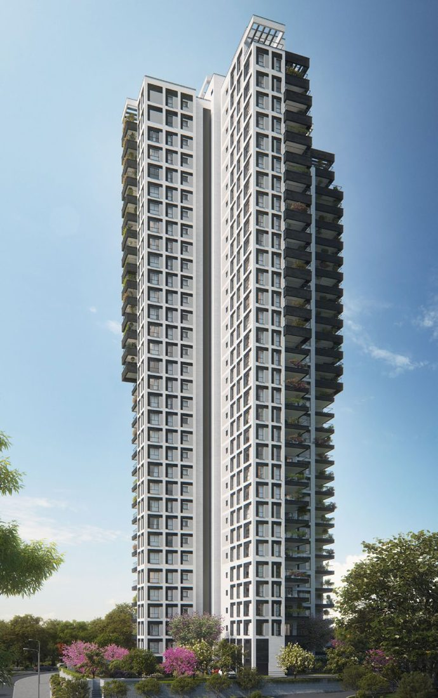

Coastal Israel developments
New-build homes in Israel's fast-growing coastal cities — locations we've identified ahead of the wider market.




Jabotinsky Street, New North Ashdod
Prices starting from NIS 2,000,000
Developer loan of NIS 1,000,000 — interest-free, not index-linked, over 15 years.
A high-quality residential complex of four buildings of up to 27 floors with around 650 apartments, plus commercial and leisure areas, in Ashdod's New North — the city's fastest-growing area and a magnet for young families. Designed by BLK Architects, one of Israel's leading architectural firms.
- 2- to 5-room apartments and 6-room penthouses
- Designed lobbies, residents' gym, co-working space and children's play areas
- Shops, restaurants and leisure on site
- A+ energy rating and sustainable, green-standard construction
- Close to the BIG and Star Center shopping centres, the train station and public transport
- Next to the Lachish River Park and its sports complex, with an education campus nearby




Park HaYam, South Netanya
Prices starting from NIS 2,980,000
20/80 payment plan available — pay 20% on signing and the balance on completion.
A boutique residential tower in Park HaYam, South Netanya — a new, emerging neighbourhood with ambitious plans to become the city’s next focal point, set between the city and the sea. Every apartment enjoys three exposures, a large garden balcony and maximum privacy, with no shared walls. At the tower’s entrance, four landscaped concept gardens create a private green lung exclusively for residents.
Why this location stands out
- Close to the sea – minutes from Netanya’s beaches, with the sea breeze and Mediterranean sunsets as part of daily life
- Next to Ir Yamim and the new Ir Yamim – South Netanya’s most sought-after coastal neighbourhoods, with established shops, schools and services
- Large green and protected areas – a huge new park planned as the neighbourhood’s green lung, a stone’s throw from the beach, with South Netanya’s protected nature reserves and coastal parklands nearby
- Excellent access – quick links to the whole of Netanya, Highway 2 and the coastal road to Tel Aviv and Haifa
The development
- 3- to 5-room apartments, mini penthouses and penthouses
- Only one apartment per wing – no common walls, complete privacy on the floor
- Three exposures for abundant natural light, and a large garden balcony in every apartment
- Four concept gardens: a morning spirit garden for yoga and coffee, an organic orchard and vegetable garden, a flowering bloom garden, and an architect-designed water garden
- Residents’ club, lavish high-ceilinged lobby, 4 elevators and underground parking for every apartment
- Stone façade, 80×80 cm porcelain flooring; built to green-building certification standards